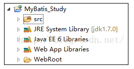
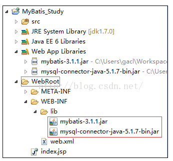
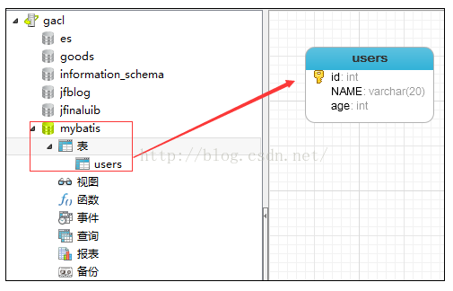
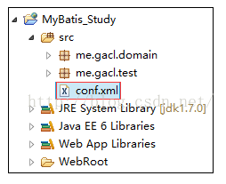
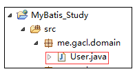
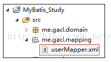
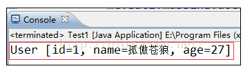

MyBatis是一个支持普通SQL查询，存储过程和高级映射的优秀持久层框架。MyBatis消除了几乎所有的JDBC代码和参数的手工设置以及对结果集的检索封装。MyBatis可以使用简单的XML或注解用于配置和原始映射，将接口和Java的POJO（Plain Old Java Objects，普通的Java对象）映射成数据库中的记录。
1、创建测试项目，普通java项目或者是JavaWeb项目均可，如下图所示：

2、添加相应的jar包
【mybatis】
mybatis-3.1.1.jar
【MYSQL驱动包】
mysql-connector-java-5.1.7-bin.jar

3、创建数据库和表，针对MySQL数据库
SQL脚本如下：
create database mybatis;
use mybatis;
CREATE TABLE users(id INT PRIMARY KEY AUTO_INCREMENT, NAME VARCHAR(20), age INT);
INSERT INTO users(NAME, age) VALUES('孤傲苍狼', 27);
INSERT INTO users(NAME, age) VALUES('白虎神皇', 27);将SQL脚本在MySQL数据库中执行，完成创建数据库和表的操作，如下：

到此，前期的开发环境准备工作全部完成。
1、添加Mybatis的配置文件conf.xml
在src目录下创建一个conf.xml文件，如下图所示：

<?xml version="1.0" encoding="UTF-8"?>
<!DOCTYPE configuration PUBLIC "-//mybatis.org//DTD Config 3.0//EN" "http://mybatis.org/dtd/mybatis-3-config.dtd">
<configuration>
<environments default="development">
<environment id="development">
<transactionManager type="JDBC" />
<!-- 配置数据库连接信息 -->
<dataSource type="POOLED">
<property name="driver" value="com.mysql.jdbc.Driver" />
<property name="url" value="jdbc:mysql://localhost:3306/mybatis" />
<property name="username" value="root" />
<property name="password" value="XDP" />
</dataSource>
</environment>
</environments>
</configuration>2、定义表所对应的实体类，如下图所示：

User类的代码如下：
package me.gacl.domain;
/**
* @author gacl
* users表所对应的实体类
*/
public class User {
//实体类的属性和表的字段名称一一对应
private int id;
private String name;
private int age;
public int getId() {
return id;
}
public void setId(int id) {
this.id = id;
}
public String getName() {
return name;
}
public void setName(String name) {
this.name = name;
}
public int getAge() {
return age;
}
public void setAge(int age) {
this.age = age;
}
@Override
public String toString() {
return "User [id=" + id + ", name=" + name + ", age=" + age + "]";
}
}3、定义操作users表的sql映射文件userMapper.xml
创建一个me.gacl.mapping包，专门用于存放sql映射文件，在包中创建一个userMapper.xml文件，如下图所示：

userMapper.xml文件的内容如下：<?xml version="1.0" encoding="UTF-8" ?>
<!DOCTYPE mapper PUBLIC "-//mybatis.org//DTD Mapper 3.0//EN" "http://mybatis.org/dtd/mybatis-3-mapper.dtd">
<!-- 为这个mapper指定一个唯一的namespace，namespace的值习惯上设置成包名+sql映射文件名，这样就能够保证namespace的值是唯一的
例如namespace="me.gacl.mapping.userMapper"就是me.gacl.mapping(包名)+userMapper(userMapper.xml文件去除后缀)
-->
<mapper namespace="me.gacl.mapping.userMapper">
<!-- 在select标签中编写查询的SQL语句， 设置select标签的id属性为getUser，id属性值必须是唯一的，不能够重复
使用parameterType属性指明查询时使用的参数类型，resultType属性指明查询返回的结果集类型
resultType="me.gacl.domain.User"就表示将查询结果封装成一个User类的对象返回
User类就是users表所对应的实体类
-->
<!--
根据id查询得到一个user对象
-->
<select id="getUser" parameterType="int"
resultType="me.gacl.domain.User">
select * from users where id=#{id}
</select>
</mapper>4、在conf.xml文件中注册userMapper.xml文件
<?xml version="1.0" encoding="UTF-8"?>
<!DOCTYPE configuration PUBLIC "-//mybatis.org//DTD Config 3.0//EN" "http://mybatis.org/dtd/mybatis-3-config.dtd">
<configuration>
<environments default="development">
<environment id="development">
<transactionManager type="JDBC" />
<!-- 配置数据库连接信息 -->
<dataSource type="POOLED">
<property name="driver" value="com.mysql.jdbc.Driver" />
<property name="url" value="jdbc:mysql://localhost:3306/mybatis" />
<property name="username" value="root" />
<property name="password" value="XDP" />
</dataSource>
</environment>
</environments>
<mappers>
<!-- 注册userMapper.xml文件，
userMapper.xml位于me.gacl.mapping这个包下，所以resource写成me/gacl/mapping/userMapper.xml-->
<mapper resource="me/gacl/mapping/userMapper.xml"/>
</mappers>
</configuration>5、编写测试代码：执行定义的select语句
创建一个Test1类，编写如下的测试代码：
package me.gacl.test;
import java.io.IOException;
import java.io.InputStream;
import java.io.Reader;
import me.gacl.domain.User;
import org.apache.ibatis.io.Resources;
import org.apache.ibatis.session.SqlSession;
import org.apache.ibatis.session.SqlSessionFactory;
import org.apache.ibatis.session.SqlSessionFactoryBuilder;
public class Test1 {
public static void main(String[] args) throws IOException {
//mybatis的配置文件
String resource = "conf.xml";
//使用类加载器加载mybatis的配置文件（它也加载关联的映射文件）
InputStream is = Test1.class.getClassLoader().getResourceAsStream(resource);
//构建sqlSession的工厂
SqlSessionFactory sessionFactory = new SqlSessionFactoryBuilder().build(is);
//使用MyBatis提供的Resources类加载mybatis的配置文件（它也加载关联的映射文件）
//Reader reader = Resources.getResourceAsReader(resource);
//构建sqlSession的工厂
//SqlSessionFactory sessionFactory = new SqlSessionFactoryBuilder().build(reader);
//创建能执行映射文件中sql的sqlSession
SqlSession session = sessionFactory.openSession();
/**
* 映射sql的标识字符串，
* me.gacl.mapping.userMapper是userMapper.xml文件中mapper标签的namespace属性的值，
* getUser是select标签的id属性值，通过select标签的id属性值就可以找到要执行的SQL
*/
String statement = "me.gacl.mapping.userMapper.getUser";//映射sql的标识字符串
//执行查询返回一个唯一user对象的sql
User user = session.selectOne(statement, 1);
System.out.println(user);
}
} 执行结果如下：

可以看到，数据库中的记录已经成功查询出来了。